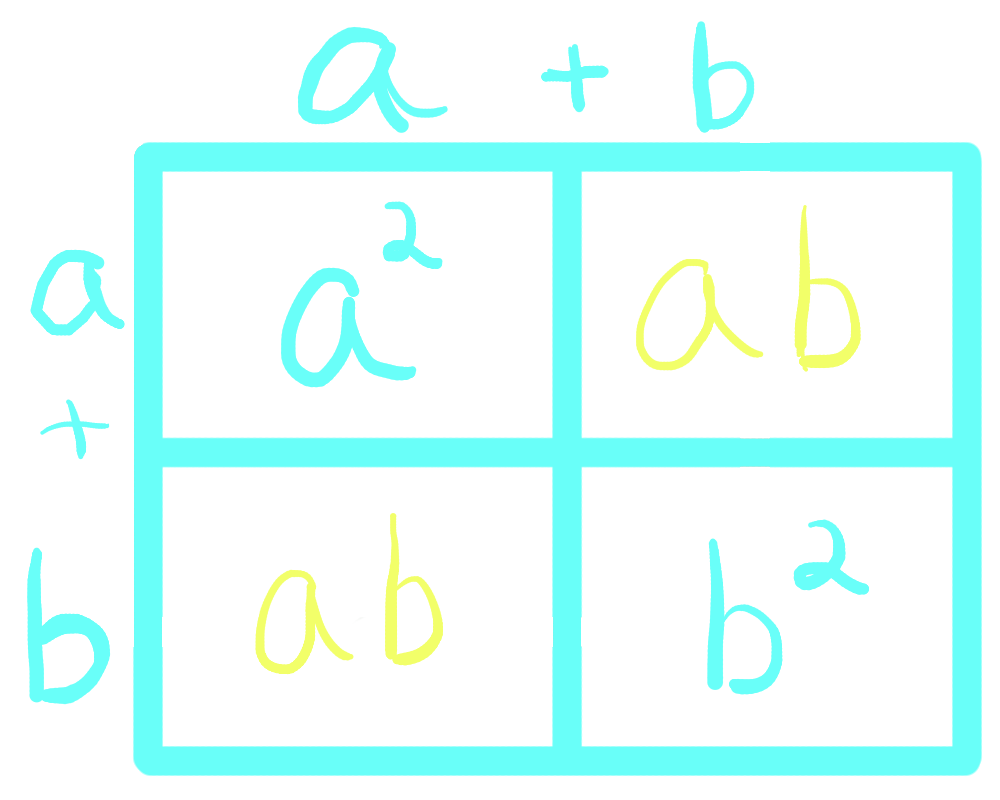

What is Pascal's Triangle?
Pascal's Triangle is a triangle of numbers with many uses in math. Starting with a 1 surrounded by zeros, each number is found by adding the two above it.
The first 5 rows of Pascal's Triangle:

Pascal's Triangle has many useful properties and interesting patterns, which are described throughout this website.
Uses in Math:
Binomial Coefficients
One property of Pascal's Triangle is that the rows represent coefficients of a binomial expansion. In other words, if you raise the binomial (a + b) to the power of n, the coefficients form the same sequence as row n of Pascal's Triangle.
For example, (a + b)2 works out to 1(a2) + 2(a1b1) + 1(b2). Row 2 of Pascal's Triangle is 1 2 1.
Combinatorics
Another cool thing about Pascal's triangle is that it directly represents the probability formula n choose k- often written as nCk.
x = nCk means that if you have a set of n things, there are x possible subsets of size k.
For example, if I am selecting people from a group of 4- let's call them A, B, C, and D- there are 4 possible choices when I choose only one person.
If I choose a group of two people, there are 6 possibilities- AB, AC, AD, BC, BD, and CD.
The connection to Pascal's Triangle is simple- to find nCk, just check the number at row n, item k of the Triangle.
*Remember that the first row, which is just a 1, is row 0, and the first item of every row is item 0.
But Why?
So why does Pascal's Triangle have so many different applications?
It may seem like a crazy coincidence, but all of these can be traced back to one particular property- the paths property.
The paths property means that every number in Pascal's Triangle represents the number of paths to it from the top.

As you can see in these examples, there is one path to 1, two possible paths to 2, and 3 paths to 3.
If you think about this, it makes sense. To reach a given number on the triangle, my path will have to include either the number to its top left, or to its top right. And once I reach one of those two, I only have one choice- move to my selected number.
So, the number of paths to my number is equal to the sum of the two numbers above it- which is exactly how we find a new number!
The Paths Property and Binomial Coefficients
Think about multiplying binomials- say you have (a + b)2.
Does this look familiar?
This is often called box multiplication, but it's basically a visual demonstration that makes it easier to multiply all terms.
In other words, any given term in the first part will be multiplied by all terms in the second part.
If I multiply (a + b) * (x + y), my answer will be ax + ay + bx + by.
When it comes to binomials - (a + b)n - you can think of it as choosing either a or b from each term.